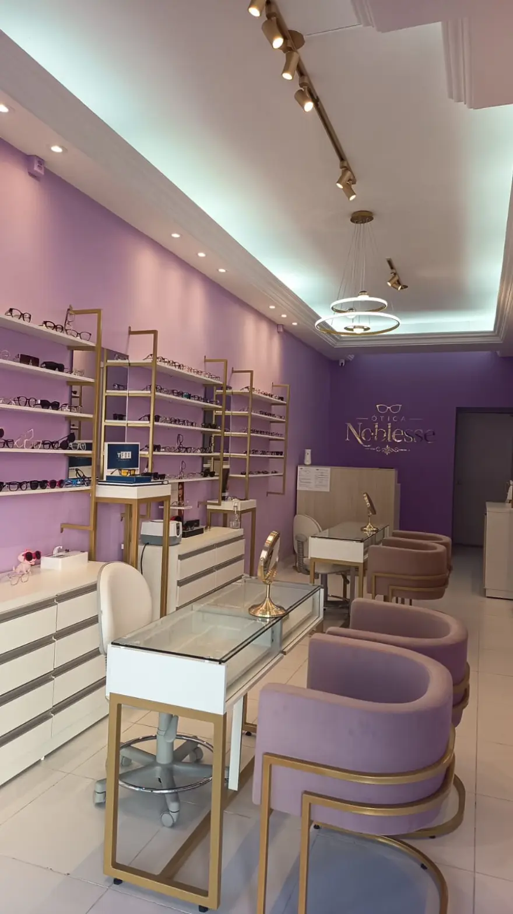
Você vê antes de decidir
A simulação iVision, feita no tablet do balcão, mostra na tela como cada armação e cada tipo de lente ficam no seu rosto — em vez de você escolher por uma tabela impressa e descobrir o resultado só na retirada.
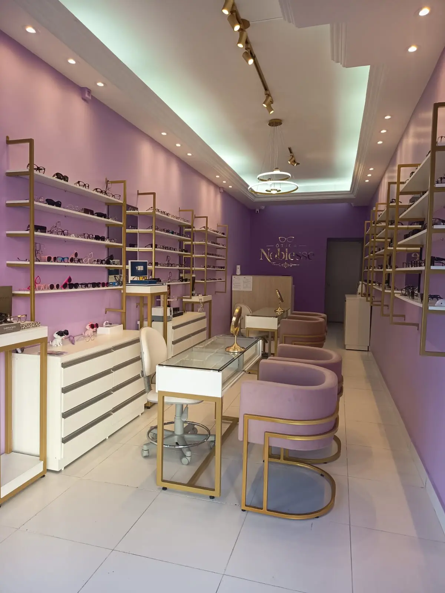
Ótica boutique · Uberlândia, MG
Curadoria de armações e óculos de sol de marcas renomadas, com atendimento que dedica tempo ao seu rosto, ao seu grau e ao seu jeito — até o óculos parecer parte de você.
Cada uma delas existe por um motivo prático: tirar o "achismo" da escolha do óculos e provar, ali na hora, o que você está levando para casa.

A simulação iVision, feita no tablet do balcão, mostra na tela como cada armação e cada tipo de lente ficam no seu rosto — em vez de você escolher por uma tabela impressa e descobrir o resultado só na retirada.
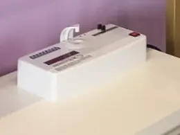
Temos equipamento próprio de teste UV: sua lente é medida na sua frente antes de sair da loja. Proteção solar aqui é um número que você vê, não uma promessa escrita na embalagem.
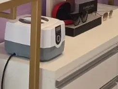
Passe na loja quando quiser: lavamos lentes e armação em ultrassom, o mesmo processo usado em joalheria, que tira a sujeira das dobradiças e das plaquetas. Sem custo, sem hora marcada, mesmo tempos depois da compra.
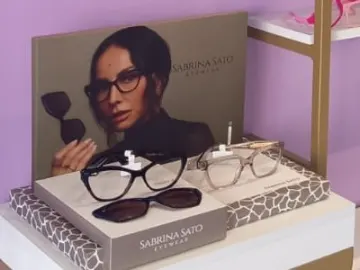
Sabrina Sato Eyewear, Carmem Vitti, Juliana Paes, John John e Fox convivem nas mesmas prateleiras: coleções que saem das campanhas e chegam aqui, num acervo pensado peça por peça — não um mostruário de atacado.
Uma torre interativa com inteligência artificial faz um pré-atendimento óptico enquanto você espera — e o especialista já recebe você sabendo como os seus olhos trabalham no dia a dia.
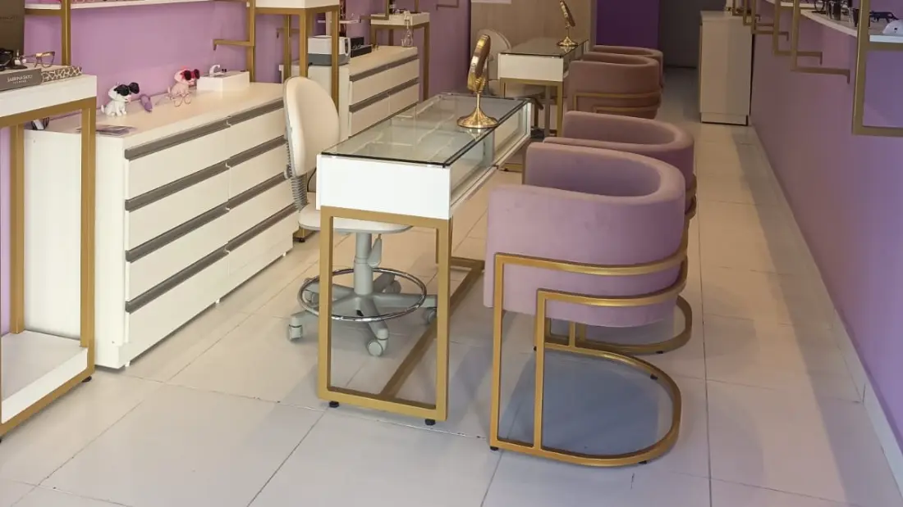
Antes da conversa com o especialista, você passa alguns minutos na torre. A inteligência artificial acompanha como a sua visão se comporta em situações comuns e organiza tudo em um relatório.
Quando você senta, esse relatório já está na mesa. A indicação de lentes parte do seu uso real — não de um questionário genérico nem do palpite de quem está atendendo.
Sem custo e sem compromisso de compra: faz parte do atendimento da casa.
A IA lê o formato do seu rosto e aponta os estilos de armação que conversam com ele. Você começa a escolha por um caminho, em vez de provar modelo por modelo no escuro.
A torre recria situações reais — dirigindo, em casa, na rua — e acompanha o movimento dos seus olhos e do pescoço em cada uma delas.
O resultado vira um mapa de calor do uso da sua visão na rotina, que aponta quais lentes, tratamentos e tecnologias fazem sentido para você.
O especialista da Noblesse parte desse relatório para indicar a lente — a mesma lógica do nosso teste de UV: mostrar, em vez de prometer.
Experimente o iVision na sua próxima visita.
Serviços
Tudo o que acontece entre "preciso trocar meu óculos" e "esse é o meu óculos" — inclusive o que vem depois da compra.
Medição de grau, avaliação das suas queixas do dia a dia (tela, direção, leitura) e a receita explicada em português — com hora marcada, para você não esperar em pé.
Adaptação e venda, com teste de conforto e orientação de manuseio e higiene — incluindo lentes coloridas e de descarte programado.
Armação torta, plaqueta gasta, parafuso solto: regulamos e higienizamos em ultrassom na hora, mesmo em óculos que você não comprou aqui.
A escolha de armação e de lente feita na tela, lado a lado: você compara tratamentos e formatos e decide vendo o resultado, não imaginando.
Armações e lentes com garantia de fábrica registrada na sua compra — e o acompanhamento feito por quem te atendeu, aqui na loja.
Marcas e coleções
Cinco marcas com identidade própria — da alfaiataria masculina da John John ao desenho autoral de Carmem Vitti — para que a escolha seja de estilo, não de falta de opção.
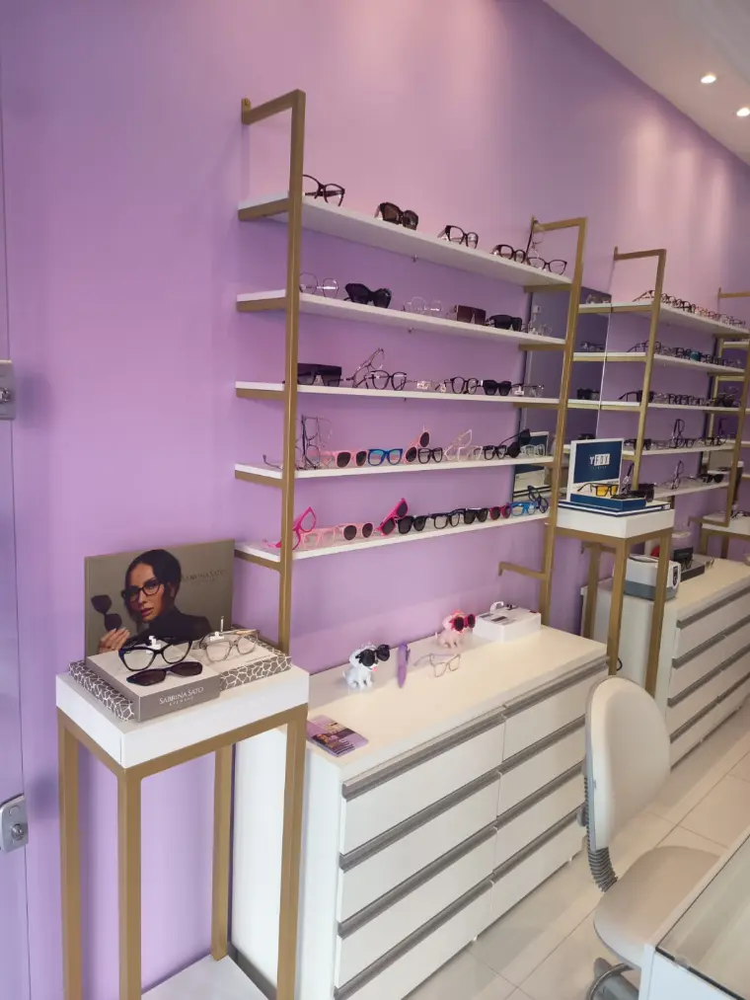
Acetato, metal e titânio — do discreto de uso diário ao desenho que vira assinatura.
Conhecer no WhatsApp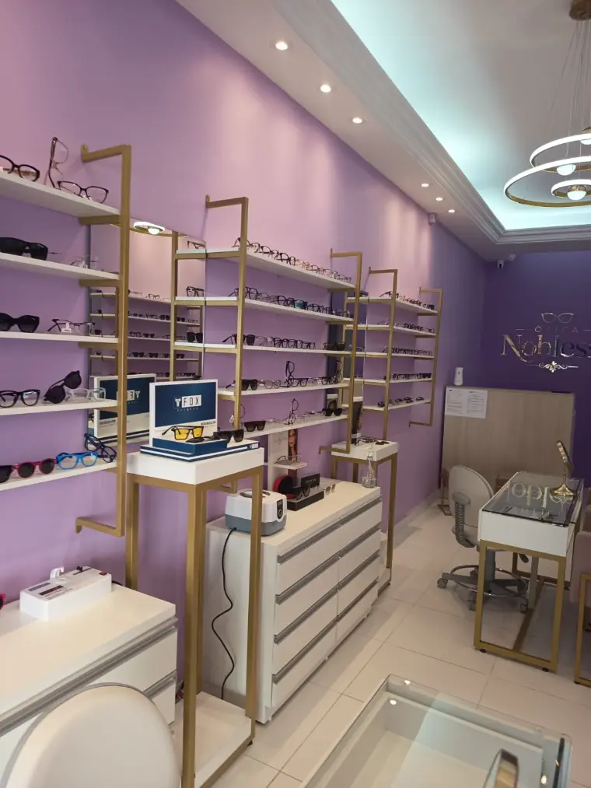
Com ou sem grau, todos testados no nosso medidor de UV antes de saírem da loja.
Conhecer no WhatsAppArmações flexíveis, leves e coloridas, ajustadas para o óculos parar de escorregar.
Conhecer no WhatsAppUm giro pela vitrine real da loja. O acervo muda toda semana — se você procura um modelo específico, é só pedir uma foto pelo WhatsApp.
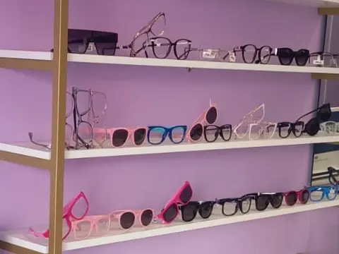
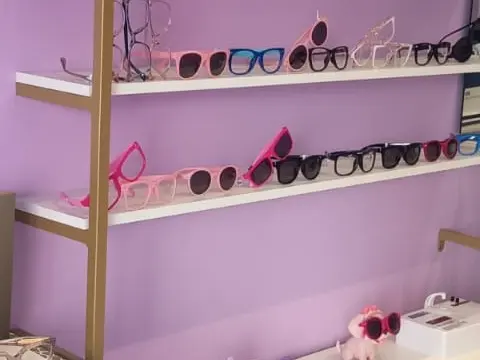
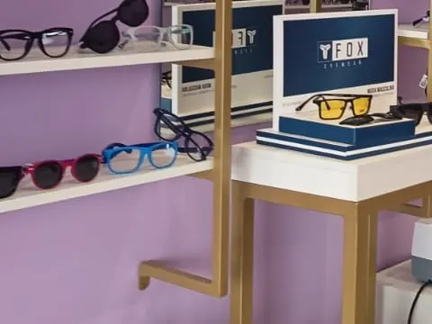
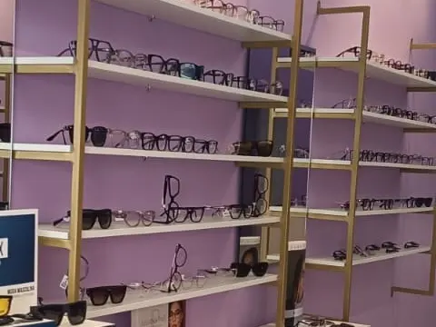
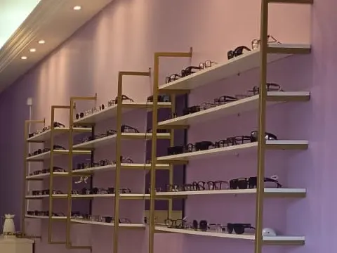
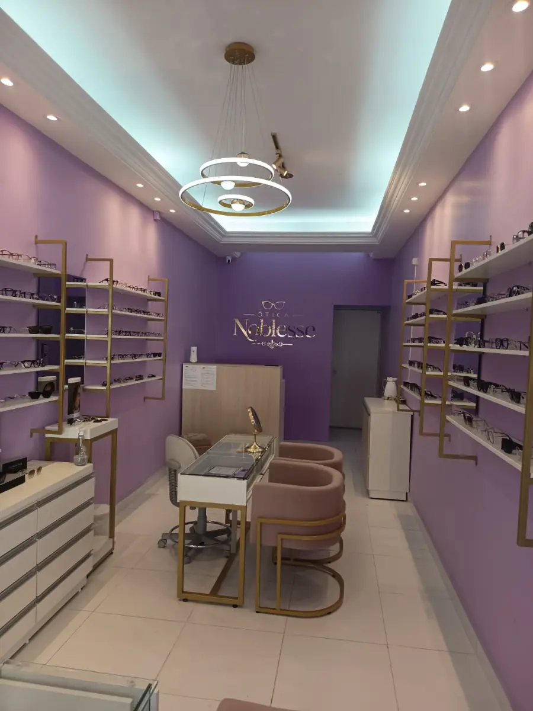
Sobre a Noblesse
A Noblesse abriu as portas na Av. Floriano Peixoto com uma decisão tomada antes da primeira armação chegar: o lugar onde alguém escolhe o rosto que vai usar todos os dias não pode parecer uma sala de espera. Daí as paredes lilás, o latão nas prateleiras, as poltronas de veludo — e a mesa onde a conversa acontece sentada, no seu tempo.
Por trás da vitrine, porém, a operação é técnica. Medidor de UV, higienização por ultrassom e simulação assistida por tablet existem aqui pelo mesmo motivo: transformar em evidência o que, na maioria das óticas, o cliente precisa aceitar na base da confiança.
O que nos guia
Cuidar da saúde visual de cada cliente com produtos que aguentam o uso real, atendimento que lembra o seu nome e tecnologia que mostra — em vez de prometer — o que você leva para casa. Conforto, segurança e estilo no mesmo par: é isso que faz alguém voltar e indicar a Noblesse.
Ser a ótica que o uberlandense indica sem pensar duas vezes — referência em qualidade e em saúde visual, com um atendimento que transforma cada visita em experiência, não em protocolo.
Princípios
O cuidado com a sua visão vem antes de fechar a venda.
Produtos e serviços dentro dos padrões mais altos de segurança.
Relações transparentes e honestas, feitas para durar.
Cada pessoa é ouvida antes de receber uma solução.
Melhorar sempre: produto, serviço e atendimento.
Responsabilidade, respeito e clareza em cada relação.
Tecnologia e tendências acompanhadas de perto, não de longe.
Mais do que vender óculos: clientes para a vida toda.
Onde estamos
Agendamento
O agendamento é feito direto com a loja, pelo WhatsApp ou por telefone — sem formulário, sem espera por retorno.